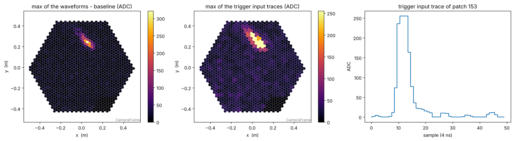
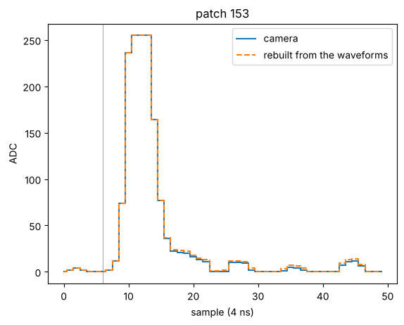
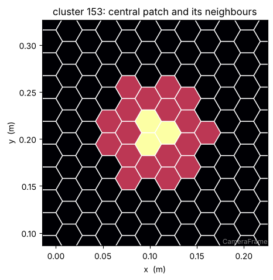
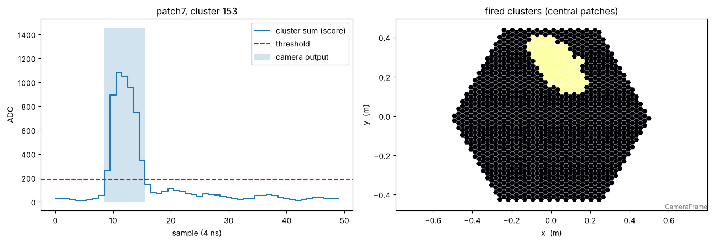
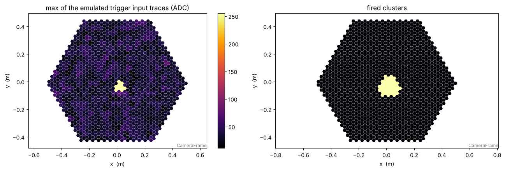

Note
This page is the notebook notebooks/sst1m_trigger_traces.ipynb of the
sst1mpipe repository:
download it to run it yourself.
The DigiCam trigger: trigger traces, patch7, and how to emulate it
The SST-1M camera (DigiCam) triggers in its FPGAs, on the sums of groups of pixels. This notebook shows what the camera records of its trigger, how the patch7 trigger running on the telescopes works, and how to emulate it from the raw data and from simulations with sst1mpipe.trigger.
The trigger chain, per readout sample (4 ns):
Patches: the 1296 pixels are grouped in 432 patches of 3 neighbouring pixels.
Trigger input traces (
trigger_input_traces): for each patch, the sum of its 3 pixels after subtraction of their baseline, clipped to 0–255 ADC (the FADC output of the patch).patch7: for each patch, the sum of the input traces of the cluster made of the patch and its 6 neighbours (fewer at the camera edge).
Trigger output (
trigger_output_patch7): 1 where this cluster sum is above the threshold. The camera triggers if any cluster fires.
[1]:
import matplotlib.pyplot as plt
import numpy as np
from ctapipe.io import EventSource
from ctapipe.visualization import CameraDisplay
from sst1mpipe.instrument.camera import DigiCam
from sst1mpipe.resources import TEST_DATA_DIR
from sst1mpipe.trigger import TriggerEmulator, TriggerPatch7Emulator, TriggerPatch19Emulator, TriggerTDSCANEmulator
from sst1mpipe.trigger.emulator import BASELINE_SAMPLE
1. The trigger traces of the raw data
SST1MEventSource fills, for each telescope event, the trigger traces of the camera in event.r0.tel[tel_id], as arrays (432 patches, n_samples). They are in patch order (patch_sw_id) for both telescopes, with the wrongly connected modules moved back as for the pixels:
Field |
Content |
|---|---|
|
FADC output of each patch (0–255 ADC) |
|
patch7 output of the cluster centred on each patch (0 or 1) |
|
patch19 output (not used on the telescopes: always 0) |
|
output of the muon trigger |
We read a Mrk 421 run of SST1M-1 and keep the shower event with the most fired clusters.
[2]:
tel_id = 21
input_file = TEST_DATA_DIR / "zfits" / "SST1M1_20260120_1179.fits.fz"
with EventSource(input_file, max_events=200) as source:
geometry = source.subarray.tel[tel_id].camera.geometry
events = [event for event in source if event.trigger.event_type.name == "SUBARRAY"]
event = max(events, key=lambda event: event.r0.tel[tel_id].trigger_output_patch7.any(axis=1).sum())
r0 = event.r0.tel[tel_id]
traces = np.asarray(r0.trigger_input_traces).astype(int)
camera_output = np.asarray(r0.trigger_output_patch7).astype(bool)
print("event", event.index.event_id)
print("trigger_input_traces ", traces.shape, traces.dtype, "max", traces.max())
print("trigger_output_patch7", camera_output.shape, "fired clusters:", np.flatnonzero(camera_output.any(axis=1)))
event 25077897
trigger_input_traces (432, 50) int64 max 255
trigger_output_patch7 (432, 50) fired clusters: [117 128 129 130 140 141 152 153 154 163 164 165 175 176 177 178 187 188
189 199 200 201 210 211 212 213 223 224 225 234 235 236 247 248 258 259
271]
A patch is 3 pixels: DigiCam.patch_matrix (432 × 1296, sparse) gives the pixels of each patch. Its transpose puts a value per patch on its 3 pixels, to draw the patches on the camera.
[3]:
def patches_on_pixels(values):
# value of each patch shown on its 3 pixels
return DigiCam.patch_matrix.T.dot(values)
peak_patch = np.unravel_index(traces.argmax(), traces.shape)[0]
fig, axes = plt.subplots(1, 3, figsize=(16, 4.5))
CameraDisplay(geometry, image=r0.waveform[0].max(axis=1) - r0.pedestal, ax=axes[0], title="max of the waveforms - baseline (ADC)").add_colorbar(ax=axes[0])
CameraDisplay(geometry, image=patches_on_pixels(traces.max(axis=1)), ax=axes[1], title="max of the trigger input traces (ADC)").add_colorbar(ax=axes[1])
axes[2].plot(traces[peak_patch], drawstyle="steps-mid")
axes[2].set(xlabel="sample (4 ns)", ylabel="ADC", title=f"trigger input trace of patch {peak_patch}")
plt.tight_layout()

2. The input traces are the patches of the pixel waveforms
The input traces can be rebuilt from the R0 waveforms: for each pixel, the sample minus the floor of its baseline (r0.pedestal), summed over the 3 pixels of the patch and clipped to 0–255 (TriggerEmulator._compute_trigger_traces). Pixels without data (pixel_flags == 0, dead modules) do not contribute.
The FPGA updates its baseline continuously, while the event stores a single value per pixel: the rebuilt traces are identical to the camera ones at the sample BASELINE_SAMPLE = 6, and within ±1 ADC on most of the others.
[4]:
rebuilt = TriggerEmulator._compute_trigger_traces(r0.waveform[0], r0.pedestal, pixel_flags=r0.pixel_flags)
print(f"sample {BASELINE_SAMPLE}: identical patches {np.mean(rebuilt[:, BASELINE_SAMPLE] == traces[:, BASELINE_SAMPLE]):.1%}")
print(f"all samples: identical samples {np.mean(rebuilt == traces):.1%}, "
f"mean squared error per trace {np.mean(np.sum((rebuilt - traces) ** 2, axis=1)):.1f} ADC^2")
plt.plot(traces[peak_patch], drawstyle="steps-mid", label="camera")
plt.plot(rebuilt[peak_patch], "--", drawstyle="steps-mid", label="rebuilt from the waveforms")
plt.axvline(BASELINE_SAMPLE, color="grey", lw=0.5)
plt.xlabel("sample (4 ns)")
plt.ylabel("ADC")
plt.title(f"patch {peak_patch}")
plt.legend();
sample 6: identical patches 100.0%
all samples: identical samples 91.9%, mean squared error per trace 5.3 ADC^2

3. How patch7 works
DigiCam.cluster_7_matrix (432 × 432, sparse) gives, for each cluster, its patches: the central patch and its 6 neighbours. The cluster sum of all the clusters at all the samples is a single matrix product with the input traces. The cluster fires where this sum is above the threshold of the telescope.
[5]:
cluster = peak_patch
cluster_patches = DigiCam.cluster_7_matrix[cluster].indices
print(f"cluster {cluster}: patches {cluster_patches.tolist()}")
shown = np.zeros(432)
shown[cluster_patches] = 1
shown[cluster] = 2
fig, ax = plt.subplots(figsize=(5, 5))
display = CameraDisplay(geometry, image=patches_on_pixels(shown), ax=ax, title=f"cluster {cluster}: central patch and its neighbours")
display.set_limits_minmax(0, 2)
centre = DigiCam.patch_matrix[cluster].indices
x, y = geometry.pix_x[centre].mean().to_value("m"), geometry.pix_y[centre].mean().to_value("m")
ax.set_aspect("equal", adjustable="box")
ax.set_xlim(x - 0.12, x + 0.12)
ax.set_ylim(y - 0.12, y + 0.12);
cluster 153: patches [129, 140, 141, 153, 164, 165, 177]

TriggerPatch7Emulator does this product (scores) and the comparison to the threshold (trigger_output). The threshold is a required, per-telescope parameter. The patch7 threshold of this run was 185: with it, the emulated output is the camera output, sample by sample.
[6]:
patch7 = TriggerPatch7Emulator(subarray=source.subarray, threshold=185)
emulated_output, scores = patch7.trigger_output(traces, tel_id)
print("emulated output identical to the camera output:", np.array_equal(emulated_output, camera_output))
fig, axes = plt.subplots(1, 2, figsize=(13, 4.5))
axes[0].plot(scores[cluster], drawstyle="steps-mid", label="cluster sum (score)")
axes[0].axhline(185, color="red", ls="--", label="threshold")
axes[0].fill_between(np.arange(scores.shape[1]), 0, scores.max() * camera_output[cluster], step="mid", alpha=0.2, label="camera output")
axes[0].set(xlabel="sample (4 ns)", ylabel="ADC", title=f"patch7, cluster {cluster}")
axes[0].legend()
CameraDisplay(geometry, image=patches_on_pixels(camera_output.any(axis=1).astype(float)), ax=axes[1], title="fired clusters (central patches)")
plt.tight_layout()
emulated output identical to the camera output: True

4. Emulating the trigger of simulations
The simulations (sim_telarray) have no trigger traces: trigger_traces computes them from the R0 waveforms and the simulated pedestal per sample, read from the camera monitoring of the simtel file. The trigger output then follows as for the raw data. The sst1mpipe-trigger tool does this for a whole file (configuration examples: sst1mpipe/resources/config/sst1mpipe_trigger_emulator_{mc,data}.json).
[7]:
simtel_file = TEST_DATA_DIR / "simtel" / "gamma_point_200_800E3GeV_20_20deg_ATM52_300669.corsika.gz.NSBmed4.simtel.gz"
with EventSource(simtel_file, max_events=10) as simtel_source:
patch7_mc = TriggerPatch7Emulator(subarray=simtel_source.subarray, threshold=242)
for sim_event in simtel_source:
for sim_tel_id in sim_event.r0.tel:
monitoring = simtel_source.file_.camera_monitorings[sim_tel_id]
pedestal = monitoring["pedestal"] / monitoring["n_ped_slices"]
sim_traces = patch7_mc.trigger_traces(sim_event, sim_tel_id, pedestal=pedestal)
sim_output, sim_scores = patch7_mc.trigger_output(sim_traces, sim_tel_id)
print(f"event {sim_event.index.event_id:5d} tel {sim_tel_id}: max cluster sum {sim_scores.max():4d}, "
f"patch7 fires: {sim_output.any()}")
event 102 tel 1: max cluster sum 504, patch7 fires: True
event 115 tel 1: max cluster sum 505, patch7 fires: True
event 414 tel 1: max cluster sum 200, patch7 fires: False
event 414 tel 2: max cluster sum 319, patch7 fires: True
event 601 tel 2: max cluster sum 291, patch7 fires: True
event 802 tel 2: max cluster sum 436, patch7 fires: True
event 817 tel 1: max cluster sum 389, patch7 fires: True
event 916 tel 1: max cluster sum 236, patch7 fires: False
event 916 tel 2: max cluster sum 314, patch7 fires: True
event 917 tel 2: max cluster sum 276, patch7 fires: True
event 1008 tel 1: max cluster sum 351, patch7 fires: True
event 1008 tel 2: max cluster sum 633, patch7 fires: True
event 1009 tel 1: max cluster sum 375, patch7 fires: True
event 1009 tel 2: max cluster sum 939, patch7 fires: True
[8]:
sim_geometry = simtel_source.subarray.tel[sim_tel_id].camera.geometry
fig, axes = plt.subplots(1, 2, figsize=(13, 4.5))
CameraDisplay(sim_geometry, image=patches_on_pixels(sim_traces.max(axis=1)), ax=axes[0], title="max of the emulated trigger input traces (ADC)").add_colorbar(ax=axes[0])
CameraDisplay(sim_geometry, image=patches_on_pixels(sim_output.any(axis=1).astype(float)), ax=axes[1], title="fired clusters")
plt.tight_layout()

5. Other triggers
The emulators share the base class TriggerEmulator: a trigger is defined by its scores and its threshold. Two other triggers can be studied on the same input traces:
patch19 (
TriggerPatch19Emulator): the sum over clusters of 19 patches (DigiCam.cluster_19_matrix), for larger images. It is in the camera firmware but not used on the telescopes, so its recorded output is 0.TDSCAN (
TriggerTDSCANEmulator): the candidate new firmware trigger. The traces are quantized to 4-bit codes and filtered in space (patch and neighbours,DigiCam.neighbor_patch_matrix) and time, in floating point or bit-exact fixed point.
[9]:
import json
from traitlets.config import Config
from sst1mpipe.resources import CONFIG_DIR
# example thresholds: patch19 has no threshold of the telescopes
patch19 = TriggerPatch19Emulator(subarray=source.subarray, threshold=1500)
with open(CONFIG_DIR / "sst1mpipe_trigger_emulator_data.json") as f:
tdscan = TriggerTDSCANEmulator(subarray=source.subarray, config=Config(json.load(f)))
for name, emulator in [("patch7", patch7), ("patch19", patch19), ("TDSCAN", tdscan)]:
output, scores = emulator.trigger_output(traces, tel_id)
print(f"{name:8s} max score {scores.max():8.2f}, threshold {emulator.threshold.tel[tel_id]:8.2f}, "
f"fired clusters {output.any(axis=1).sum()}")
patch7 max score 1455.00, threshold 185.00, fired clusters 37
patch19 max score 2443.00, threshold 1500.00, fired clusters 16
TDSCAN max score 15.75, threshold 8.75, fired clusters 23